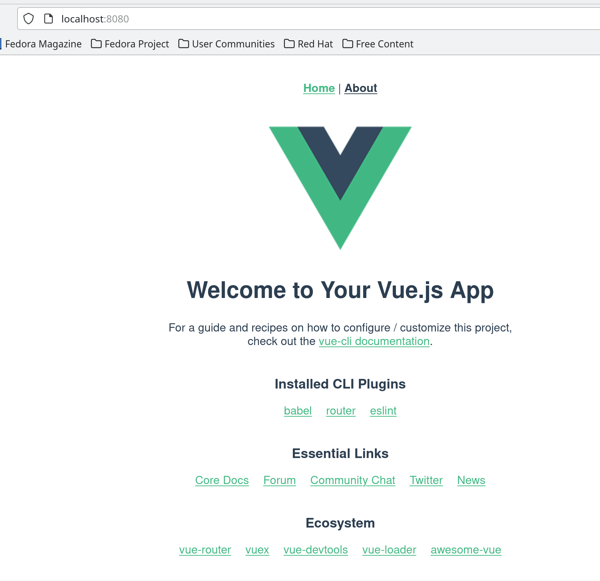
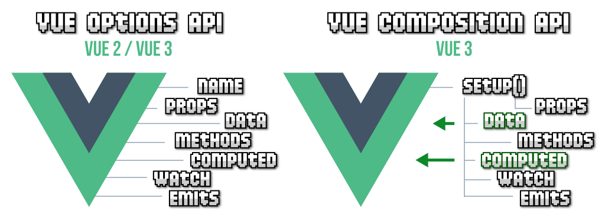

Primers passos
Frameworks de Javascript
Aquestos són alguns dels més utilitzats:
-
React.js: Desenvolupat per Facebook, React és un framework de llibreria de JavaScript utilitzat per construir interfícies d'usuari interactives. Es destaca per la seva virtual DOM i l'enfocament basat en components.
-
Angular.js / Angular: Desenvolupat per Google, Angular és un framework complet per construir aplicacions web i mòbils. Utilitza TypeScript i ofereix una arquitectura basada en components.
-
Vue.js: Vue.js és un framework de JavaScript progressiu utilitzat per construir interfícies d'usuari. És conegut per la seva simplicitat i flexibilitat, i pot ser integrat fàcilment en altres projectes.
-
Node.js: Mentre que no és un framework en si mateix, Node.js és una plataforma que permet l'execució de JavaScript del costat del servidor. Es basa en el motor V8 de Google Chrome i és utilitzat per construir aplicacions del costat del servidor escalables i eficients.
-
Express.js: És un framework minimalista de Node.js utilitzat per construir aplicacions web i API. És flexible i permet als desenvolupadors definir l'estructura de les seves aplicacions.
-
Next.js: Un framework de React que facilita la creació d'aplicacions React amb característiques com el renderitzat del costat del servidor (SSR) i el renderitzat del costat del client (CSR).
-
Nest.js: Un framework de Node.js per construir aplicacions eficients i escalables al costat del servidor. Utilitza TypeScript i es basa en els principis de l'arquitectura modular.
-
Svelte: Un framework de JavaScript que es diferencia dels altres pel seu enfocament "compila mentre escrius". La major part de la lògica del framework es trasllada al temps de compilació, el que pot resultar en codi més eficient en temps d'execució.
Recorda que les tendències en el desenvolupament de software poden canviar ràpidament, i és una bona pràctica mantenir-se actualitzat amb les últimes novetats i canvis en l'ecosistema de JavaScript.
Instal·lació
Per instal·lar Vue.js 3 en un sistema Linux, pots seguir aquests passos generals. Tingues en compte que els detalls poden variar segons la distribució específica que estiguis utilitzant.
- Node.js i npm: Assegura't de tenir Node.js i npm instal·lats al teu sistema. Pots descarregar i instal·lar Node.js des del lloc web oficial: https://nodejs.org/
Pots verificar les versions instal·lades executant els següents comandaments al teu terminal:
- Instal·lació de Vue CLI:
Vue.js proporciona una interfície de línia de comandes (CLI) que facilita la creació i gestió de projectes Vue. Per instal·lar Vue CLI, executa la següent comanda al teu terminal:
Bash
El flag -g instal·la el paquet globalment, el que permet accedir a la CLI de Vue des de qualsevol directori.
- Verificació de la instal·lació:
Pots verificar que Vue CLI s'hagi instal·lat correctament executant:
Bash
Això hauria de mostrar la versió de Vue CLI instal·lada.
- Creació d'un nou projecte Vue:
Pots crear un nou projecte Vue executant:
Bash
Segueix les instruccions interactives per configurar el teu projecte.
-
Entrar al directori del projecte: Canvia al directori del projecte recentment creat:
Bash -
Inici del servidor de desenvolupament: Per iniciar el servidor de desenvolupament, executa:
Bash
Això hauria de iniciar un servidor local, i podràs veure la teva aplicació Vue al teu navegador visitant http://localhost:8080/ o una altra URL que s'indiqui a la sortida de la comanda.
Funciona??
Ja està! Ara hauries de tenir Vue.js 3 instal·lat i funcionant al teu sistema Linux. Recorda que aquests són passos generals i poden variar segons la distribució específica de Linux que estiguis utilitzant.

Component en VUE3
Options API vs Composition API
VUE3 presenta dues opcions per a organitzar codi, Options API i Composition API.
L'estructura bàsica d'un component en vue és...
En aquest exemple:
- Les dades del component es gestionen amb la funció
data, on es defineix la variableuserName. - Els mètodes del component es gestionen amb la propietat
methods, on es defineix la funcióresetNameper reinicialitzar el nom. - A la plantilla, utilitzem
v-modelper enllaçar la caixa de text amb la variableuserName. - Es mostren missatges de benvinguda personalitzats segons si s'ha introduït un nom o no.
L'Options API és més declarativa i fa servir opcions com data, methods, computed, etc., per organitzar el component. Tot i que aquest exemple és senzill, per components més grans o complexes, la Composition API pot proporcionar una organització i reutilització de codi més eficaç. Les dues opcions, Options API i Composition API, són vàlides i es poden utilitzar segons les necessitats del projecte.
Options API vs Composition API
Options API organitza el codi d'una forma més clara i més amigable per a la gent que comença a programar en VUE, mentre que Composition API facilita el desenvolupament i la reutilització de codi.
Dues opcions vàlides
- Per a aplicacions i components més senzills on voleu alguna cosa ràpida i senzilla, l'API d'Opcions pot ser la millor opció.
- Per a aplicacions més grans o components amb lògica complexa, o si teniu previst reutilitzar la lògica entre components, és probable que l'API de composició sigui més adequada.
- Si esteu començant un nou projecte i espereu que creixi en complexitat, l'adopció de l'API de composició des del principi pot ser beneficiós.
- Si
TypeScriptés essencial per al vostre projecte, l'API de composició és una millor opció.

| OPTIONS API | |
|---|---|
| COMPOSITION API | |
|---|---|
Estructura típica d'un projecte
L'estructura d'un projecte en Vue 3 pot variar segons les preferències del desenvolupador o els requisits del projecte, però hi ha una estructura comuna que es pot seguir. A continuació, es detalla una estructura de projecte típica per a una aplicació Vue 3:
Explicació de l'estructura:
-
public/: Aquest directori conté arxius estàtics que es poden accedir directament des de l'arrel de l'aplicació. L'arxiuindex.htmlés l'arxiu principal d'entrada on s'inicialitza l'aplicació Vue. -
src/: Aquest directori conté tot el codi font de l'aplicació Vue. -
assets/: Conté fitxers multimèdia com imatges, fonts, etc. -
components/: És aquí on es guarden els components reutilitzables de l'aplicació. Cada component té un directori propi amb el seu fitxer.vue. -
views/: Conté les vistes de l'aplicació. Cada vista correspon a una pàgina o secció de l'aplicació i pot estar formada per diversos components. -
App.vue: És el component principal que agrupa tota l'aplicació. Conté la plantilla global, els estils i la configuració general. -
main.js: És l'arxiu d'inici de l'aplicació, on es crea la instància principal de Vue i es configura l'aplicació. Aquí és on es pot importar i utilitzar plugins, configurar rutes (si s'utilitza Vue Router), entre altres coses. -
node_modules/: Aquest directori conté les dependencies del projecte que s'instal·len ambnpm install. -
.gitignore: És un arxiu on es poden llistar els arxius i directoris que es volen excloure del control de versions amb Git. -
package.json: És l'arxiu de configuració de Node.js i npm que conté la llista de dependencies, scripts, i altres configuracions. -
README.md: Un arxiu de markdown que sol proporcionar documentació i informació sobre el projecte. -
babel.config.js: Arxiu de configuració per a Babel, que es pot utilitzar per transpilar el codi JavaScript a una versió compatible amb diferents navegadors. -
vue.config.js: Arxiu de configuració per a Vue CLI, on es poden especificar diferents opcions de configuració del projecte.
Aquesta estructura és bastant estàndard, però podria variar lleugerament en funció de les necessitats del projecte i les preferències dels desenvolupadors. En projectes més grans o complexos, també podries tenir carpetes addicionals per a l'arquitectura, gestió d'estat, serveis, etc.
Ús de components
Observem un exemple en el qual creem un component que mostra una taula i l'integrem en la nostra aplicació principal en VUE3.
Clar, aquí tens un exemple senzill d'un component amb una taula, i com es pot importar i utilitzar des del component principal en Vue 3.
- Crea el teu component de taula:
- Importa i utilitza el component a la teva pàgina principal:
En aquest exemple:
-
TaulaComponentés importat a la pàgina principal utilitzant la instruccióimport. -
S'afegeix el component
TaulaComponenta la secciócomponentsde la pàgina principal. Això permet utilitzar-lo com un element a la plantilla (<TaulaComponent />). -
Dins de la plantilla de
App.vue, simplement es col·loca<TaulaComponent />on es vol que aparegui la taula.
Aquesta és una manera senzilla d'estructurar els components a Vue i d'utilitzar-los a la teva aplicació principal. Pots repetir aquest procés per afegir i utilitzar altres components segons les teves necessitats.
data i methods
En Vue 3, les propietats data i methods són dues seccions clau en la definició d'un component. Aquí tens una explicació de cada una:
data
La propietat data és una funció que retorna un objecte. Aquest objecte conté les dades que es volen utilitzar dins del component. És important destacar que, a partir de Vue 3, data ha de ser una funció que retorna l'objecte de dades en lloc d'un objecte directament. Això és perquè cada instància del component té les seves pròpies dades reactives, i utilitzar una funció assegura que les dades siguin inicialitzades de manera única per a cada instància del component.
Exemple:
| JavaScript | |
|---|---|
En aquest exemple, el component té dues propietats de dades (missatge i contador) que poden ser utilitzades a la plantilla i ser reactivament actualitzades.
methods
La propietat methods és un objecte que conté mètodes que es poden cridar des de la plantilla o dins d'altres mètodes del component. Aquests mètodes poden contenir lògica de negoci, manipulació de dades o qualsevol altra funcionalitat que necessitis.
Exemple:
| JavaScript | |
|---|---|
En aquest exemple, el component té dos mètodes, incrementar i resetejar, que poden ser cridats des de la plantilla o dins d'altres mètodes del mateix component.
Les funcionalitats que es poden aconseguir amb data i methods són fonamentals per al desenvolupament de components en Vue 3. Les dades permeten la gestió de l'estat del component, mentre que els mètodes ofereixen la capacitat d'executar lògica específica en resposta a esdeveniments o altres interaccions.
Propietats computades
En Vue.js 3, les propietats computades (computed properties) són valors que es deriven dinàmicament a partir d'altres propietats de l'instància del component. A diferència de les dades (data) i els mètodes (methods), les propietats computades no són funcions que es cridin, sinó que es tracten com a propietats i es recalculen automàticament quan alguna de les seves dependències canvia.
Per definir una propietat computada, utilitzes la secció computed dins del teu component. Aquí tens un exemple simple per il·lustrar com funcionen:
| JavaScript | |
|---|---|
En aquest exemple:
- Hi ha una propietat
radidins dedata, que és la dependència per a les propietats computades. - Les propietats computades,
areaicircumferencia, són declarades dins de la secciócomputed. Aquestes propietats són calculades a partir del valor deradi. - Quan el valor de
radicanvia, les propietats computades es recalculen automàticament.
Així, a la plantilla, pots fer servir les propietats computades de la mateixa manera que ho fas amb qualsevol altra propietat de dades:
| HTML | |
|---|---|
En aquest exemple, cada vegada que es modifica el valor de radi, les propietats computades area i circumferencia es recalcularan automàticament, i les actualitzacions es reflectiran a la plantilla.
Les propietats computades són especialment útils per a càlculs derivats, filtrat i manipulació de dades en una manera que manté la lògica clara i eficient.
Watchers
Els "watchers" en Vue.js són una funcionalitat que et permeten observar canvis en les propietats de les instàncies de Vue i executar lògica personalitzada en resposta a aquests canvis. Són útils quan vols reaccionar a canvis específics en dades de la teva aplicació i realitzar accions com ara fer peticions a l'API, actualitzar altres propietats o realitzar qualsevol acció personalitzada.
Per utilitzar un "watcher" en una instància de Vue, pots utilitzar la propietat watch. Aquí tens un exemple senzill:
| JavaScript | |
|---|---|
En aquest exemple, estem observant la propietat message i, quan aquesta propietat canvia, s'executa la funció del "watcher". La funció del "watcher" rep dos arguments: el nou valor i l'antic valor de la propietat observada.
Pots utilitzar els "watchers" per a moltes tasques, com validar dades abans que es canviïn, gestionar animacions, o fins i tot activar canvis en altres propietats. Aquí tens un exemple més avançat:
Aquest és un exemple senzill que mostra com pots utilitzar un "watcher" per gestionar el valor d'una propietat (counter) i realitzar accions basades en aquest valor. Els "watchers" són una eina potent en Vue.js que et permeten controlar i reaccionar a canvis en temps d'execució.